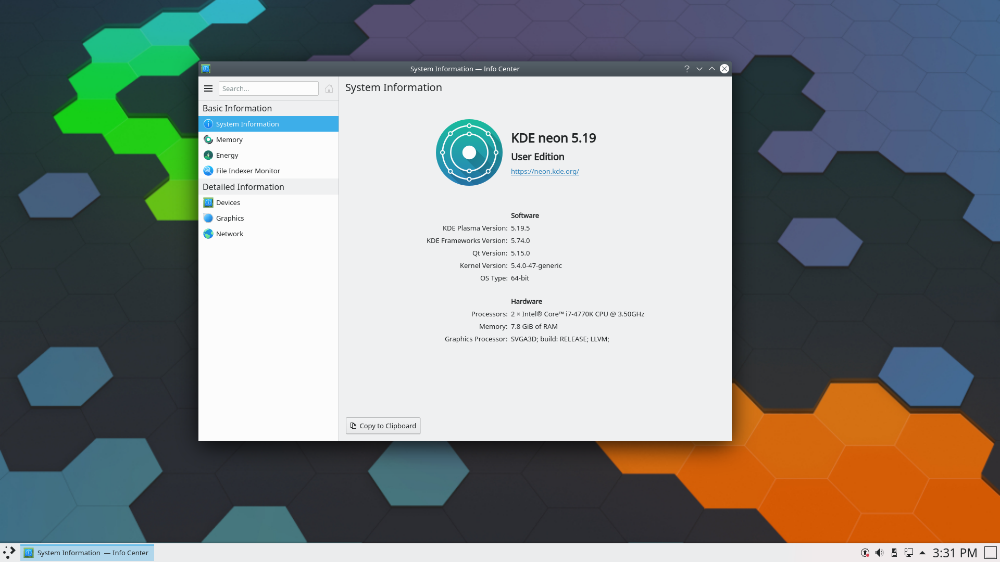

KDE Neon

KDE Neon is the official showcase distro from the KDE team, always running the latest stable KDE Plasma on an Ubuntu LTS base. If you want to experience KDE Plasma exactly as the developers intend it, this is the distro. The stable Ubuntu core handles hardware compatibility and long-term support while KDE components update independently.
Desktop Environment
KDE Plasma (latest stable)
Package Manager
APT
Latest Release
Based on Ubuntu 22.04 LTS
Init System
systemd
Support Cycle
Ubuntu LTS cycle
Architecture
x86_64
Key Features
- Always the latest KDE Plasma on a rock-solid Ubuntu LTS base
- KDE apps and Plasma update independently of the Ubuntu base
- Discover software center for easy app management
- Full Wayland session support out of the box
- Maintained directly by the KDE development team
- Excellent starting point for learning KDE Plasma